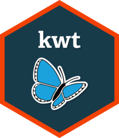

Connect to a database
db_connect.RdCreate a connection object to a PostgreSQL database using an ODBC connection. For details about setting up an ODBC connection, see this guide.
db_connect.RdCreate a connection object to a PostgreSQL database using an ODBC connection. For details about setting up an ODBC connection, see this guide.